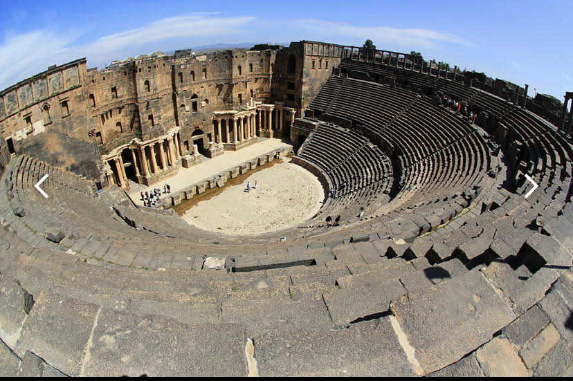
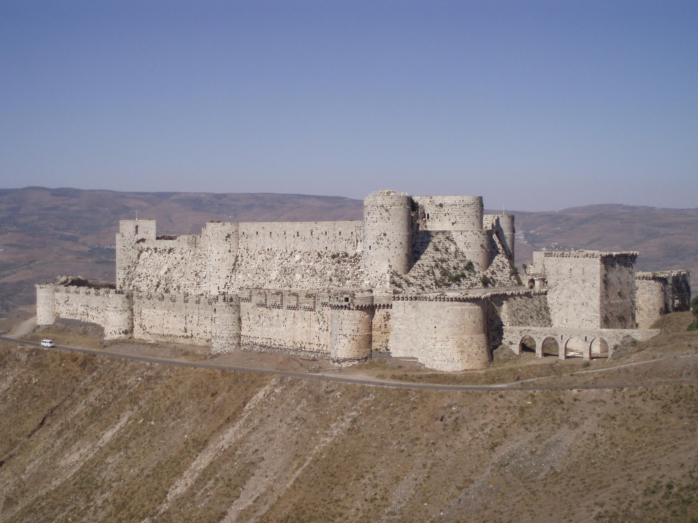
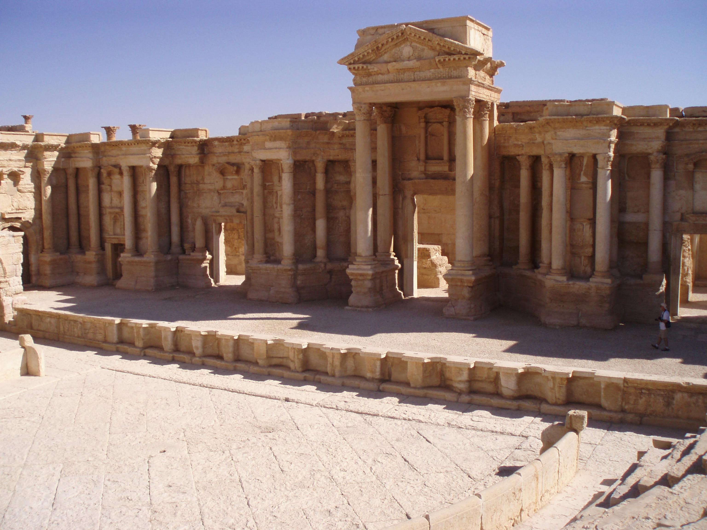
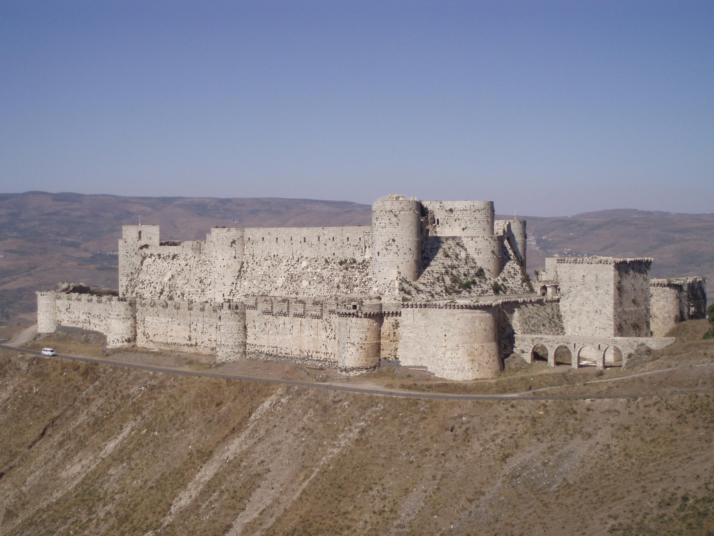
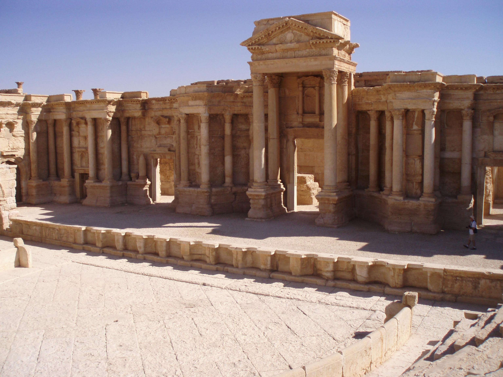

Syria as an Independent Nation
The years immediately following Syria’s declared independence were marked by instability and repeated government coups. Syria joined with Egypt and became the United Arab Republic in 1958, but the union split a few short years later in 1961. The 1960s brought more military coups, revolts and riots. In 1963, the Arab Socialist Baath Party, which was active throughout the Middle East since the late 1940s, seized power of Syria in a coup known as the Baath Revolution. In 1967, during the Six Day War, Israel seized the Golan Heights, a rocky plateau located in southwestern Syria. Conflict over this coveted area continued for years and is still ongoing.
Hafez al-Assad occupied the prisidency by force
In 1970, Hafez al-Assad, the Syrian minister of defense, overthrew the de facto leader of Syria, Salah Jadid. He remained in power as president for 30 years, until his death in 2000. Hafez al-Assad was part of the Islam Alawite, which is a minority Shiite sect. During his presidency, Hafez was credited with strengthening the Syrian military with the help of the Soviets. Syria and Egypt went to war with Israel in 1973. Shortly after this conflict, Syria also got involved in the civil war in Lebanon, where it has maintained a military presence ever since. In 1982, the Muslim Brotherhood organized a rebellion against the Assad regime in the city of Hama, and Assad responded by arresting, torturing and executing political rebels. Estimates vary, but many experts believe the retaliation took the lives of about 20,000 civilians. The same year, Israel invaded Lebanon and attacked the Syrian army stationed there. But by 1983, Israel and Lebanon announced that the hostility between the two countries was over. Toward the end of his life, Hafez attempted to make more peaceful relations with Israel and Iraq.
Bashar al-Assad took Syrian Presidency illegally
When Hafez al-Assad died in 2000, his son Bashar became president at age 34. After Bashar took power, the constitution was amended to reduce the minimum age of the president from 40 to 34. A medical student, Bashar wasn’t the first choice for successor. His older brother, Bassel, was the next in line to take his father’s place, but he was killed in an automobile accident in 1994. At the start of his presidency, Bashar al-Assad released 600 political prisoners, and Syrians were hopeful that their new leader would grant more freedoms and impose less oppression than his father. However, within a year, Bashar used threats and arrests to stop pro-reform activism.
USA Called Syria one of the ‘Axis of Evil’
In 2002, the United States accused Syria of acquiring weapons of mass destruction and listed the nation as a member of the so-called “axis of evil” countries. The Syrian government was also accused of being involved in the assassination of Rafic Hariri, the Lebanese prime minister, in 2005. After a few years of what seemed like potential diplomacy between Assad and other nations, the United States renewed sanctions against Syria in 2010, saying that the regime supported terrorist groups. Many human rights groups reported that Assad regularly tortured, imprisoned and killed political adversaries throughout his presidency.
Syrian Civil Revlution
In 2011 Revolts in Egypt and Tunisia, which became known as the “Arab Spring,” broke out in early 2011. In March of 2011, a group of teens and children were arrested and tortured for writing anti-government graffiti that was thought to be inspired by the Arab Spring rebellion. Peaceful protests broke out in Syria after the graffiti incident and became widespread. Assad and the Syrian government responded by arresting and killing hundreds of protestors and their family members. These events combined with other circumstances, including a lagging economy, a severe drought, a lack of general freedoms and a tense religious atmosphere, led to civilian resistance and, ultimately, an uprising.
Reference website is the first reference website
Reference website is the second reference



 


